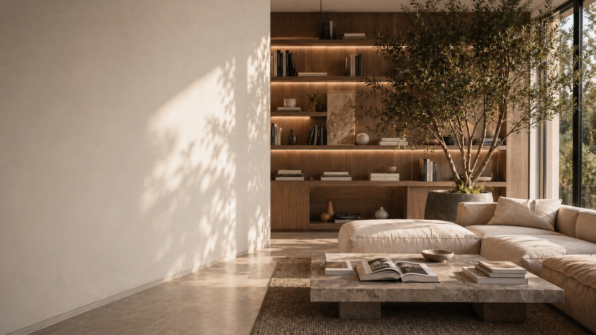
Blog & İçerik
Son yazılar.
Mimarlık, tasarım ve inşaat sektörü hakkında güncel bilgiler.
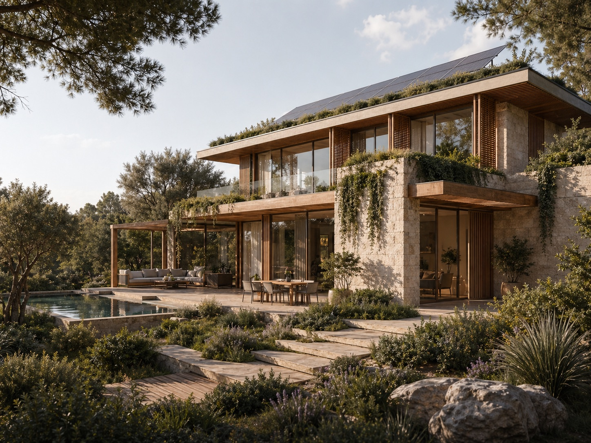
2025 Mimarlık Trendleri
Sürdürülebilir tasarım, akıllı binalar ve biofiliğin artan önemi...
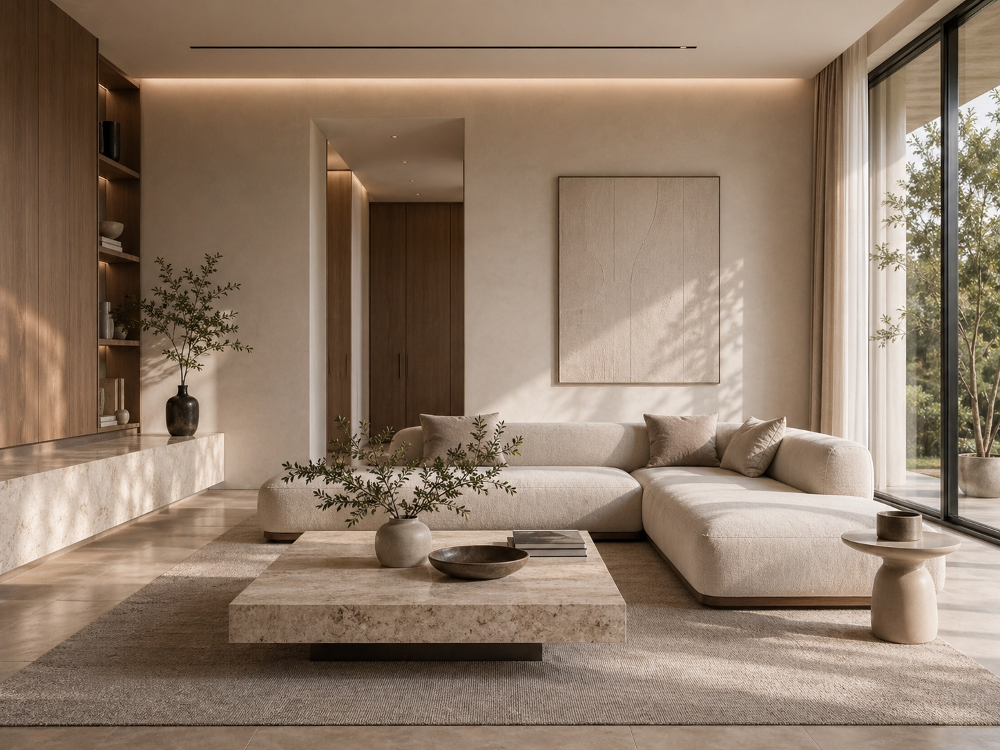
Fit-Out Projelerinde Başarı Faktörleri
Zamanlama, bütçe ve iletişim: başarılı fit-out projelerin temel taşları...
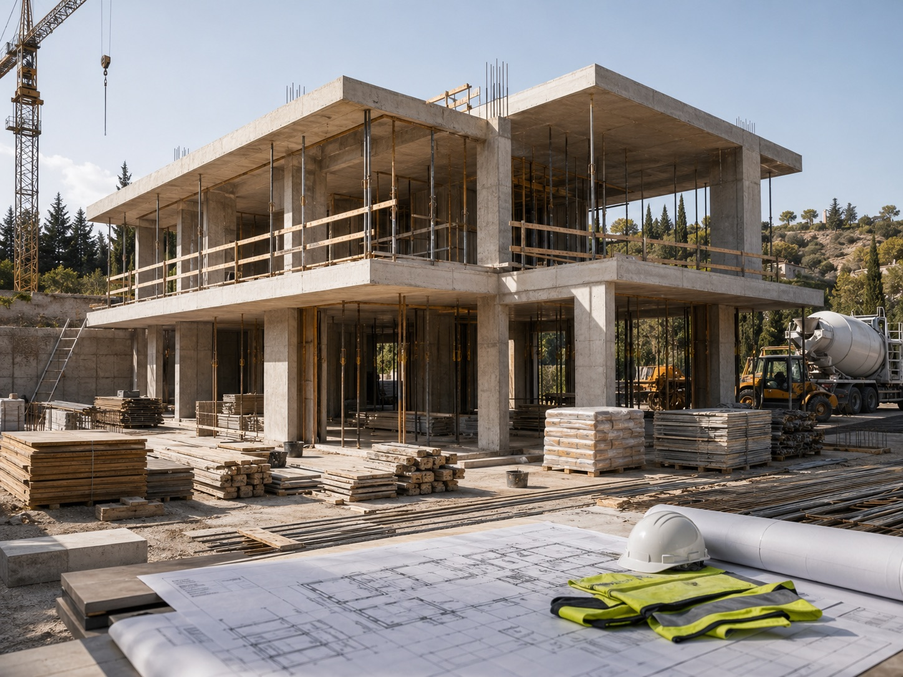
Anahtar Teslim İnşaatın Avantajları
Tek bir sorumlu, net sonuçlar ve garantili kalite...
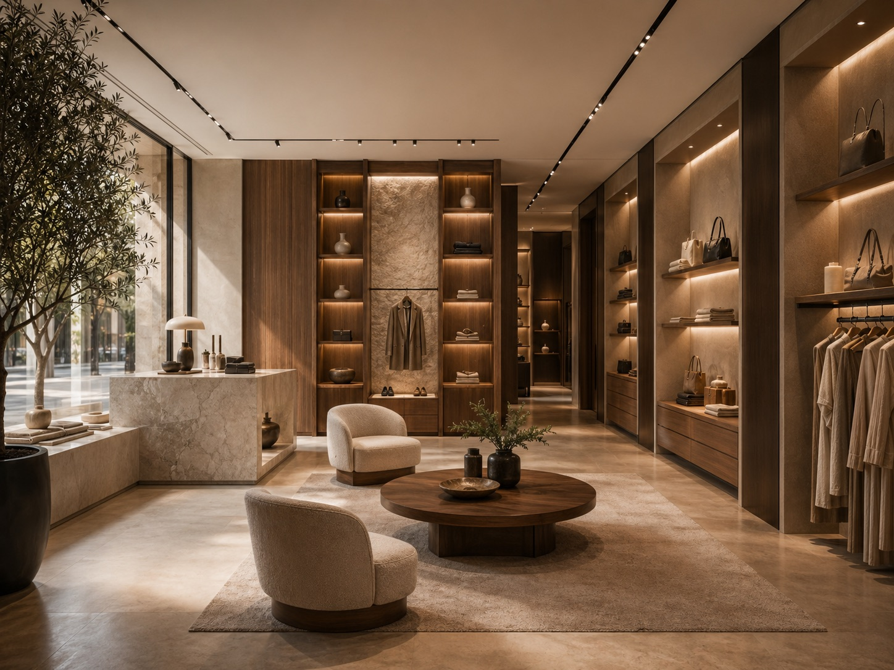
Ticari Mekan Tasarımında Marka Kimliğinin Rolü
Marka kimliğini yansıtan mekanlar, müşteri deneyimini güçlendirir ve rekabet avantajı yaratır.
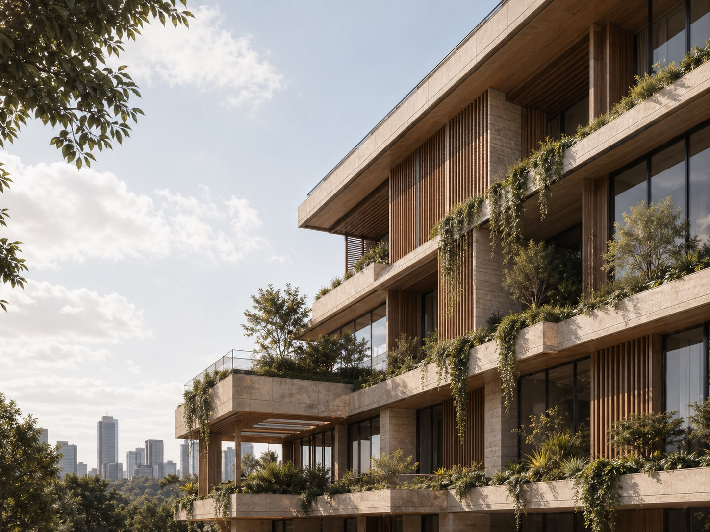
Sürdürülebilir Mimarlık: Geleceğin Yapıları
Enerji verimliliği yüksek, çevre dostu yapılar hem doğayı koruyor hem de geleceğe yatırım yapıyor.
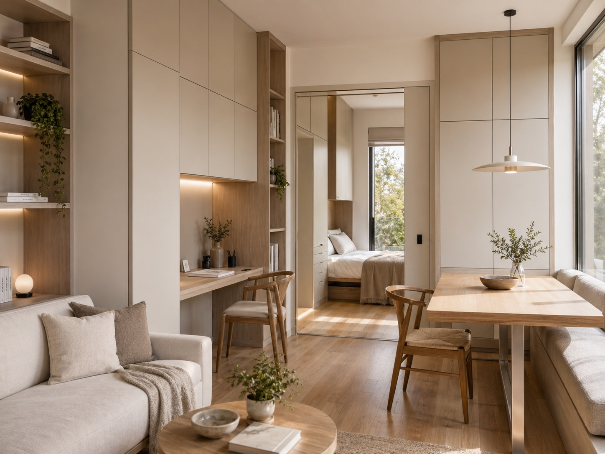
Küçük Alanları Daha Geniş Göstermenin 10 Yolu
Doğru renk, malzeme ve yerleşim seçimleriyle küçük alanları olduğundan daha geniş gösterebilirsiniz.
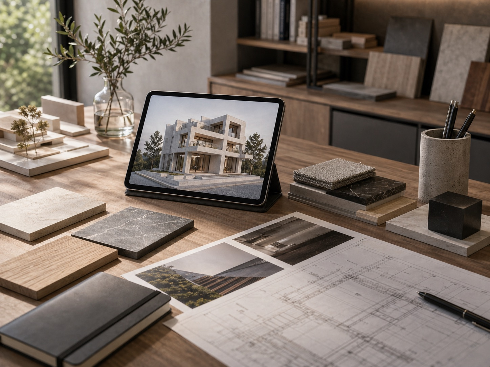
Mimarlık Sektöründe 2024 Yılı Trendleri
Teknoloji, sürdürülebilirlik ve inovasyon odaklı trendler, mimarlık sektörünün geleceğini şekillendiriyor.
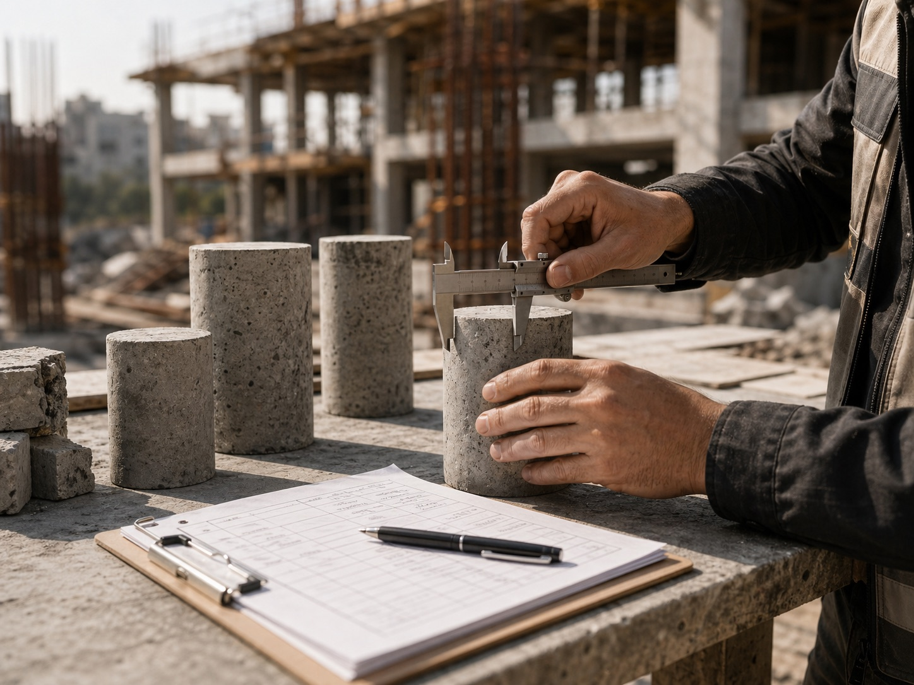
Betonarme Yapılarda Kalite Kontrol Süreçleri
Yapı güvenliği ve uzun ömürlülük için kalite kontrol süreçlerinin önemi ve uygulama yöntemleri.
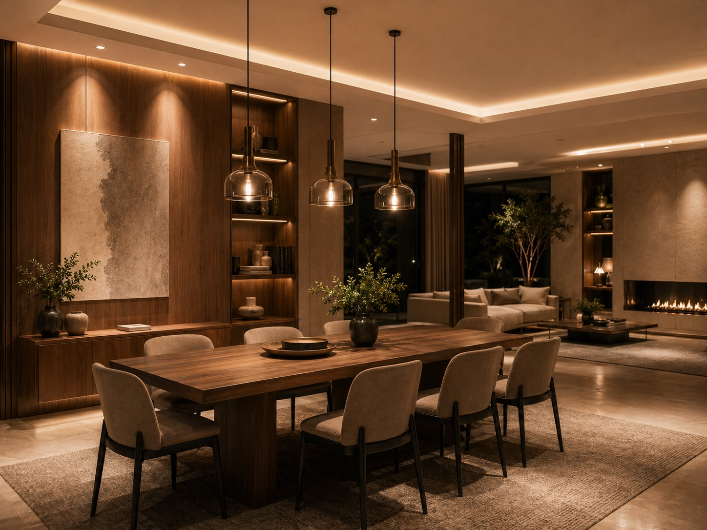
Aydınlatma Tasarımının Mekan Algısına Etkisi
Doğru aydınlatma tasarımı, mekanın atmosferini değiştirir ve kullanım deneyimini iyileştirir.
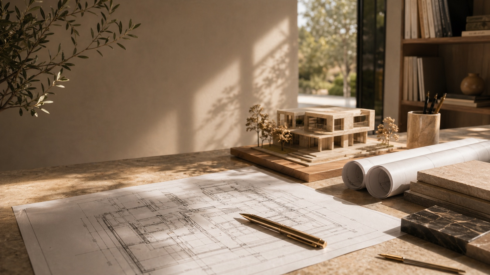